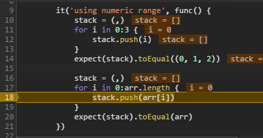

use './Todo'
use 'backbone' bb
use 'storage' Storage
class TodoList : bb.Collection {
localStorage = &Storage('todos-backbone')
model = Todo
func getModel() me.model
}
Clean syntax
Cor enables you to write large applications by providing a clean syntax, classes and a modular architecture to keep organized code, enforcing the writing of readable source based on conventions.
Easy to debug
Cor supports source-maps, allowing you the easy debugging in major browsers. However a line of Cor source is compiled to the exact line number in javascript for accurated debugging when developing in platforms that doesn't supports source-maps such as servers.
